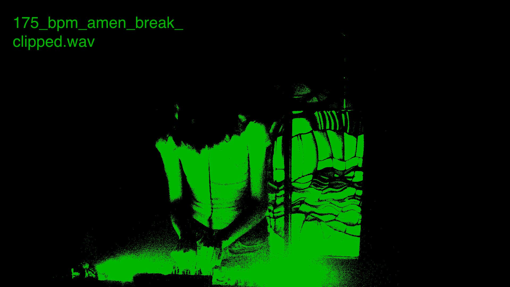

bitrot002 with gyrofield, netgf, and zolf
at my second party for bitrot, i played both the first 30 minutes and last hour of the party. the audio, plus loads of other cool stuff, is on braid.

warmup
ambient, deep dubstep, mineralism, garage
closer
drum and bass, dubstep, trap, wonky
48 hour delirium
i played a dreamy and delirious vaporwave/ambient set for subcity radio's 48 hour delirium
dataclash
a short and silly mix of mine appeared in zolf's dataclash. wav magnet download